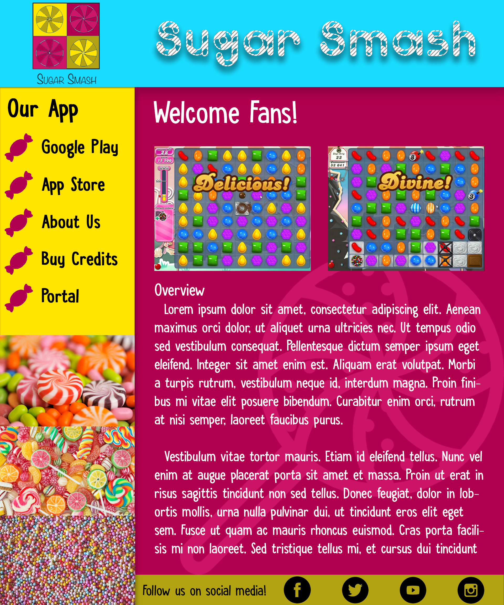
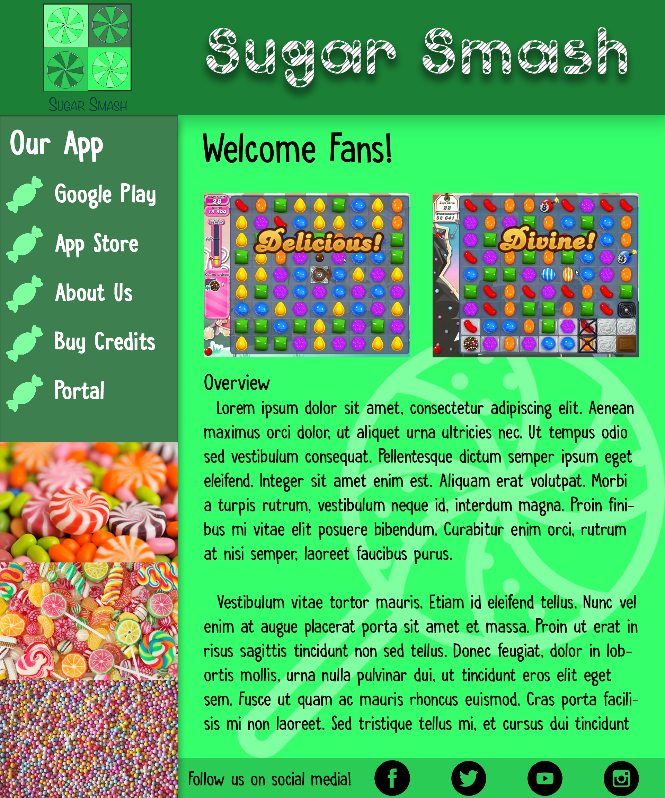
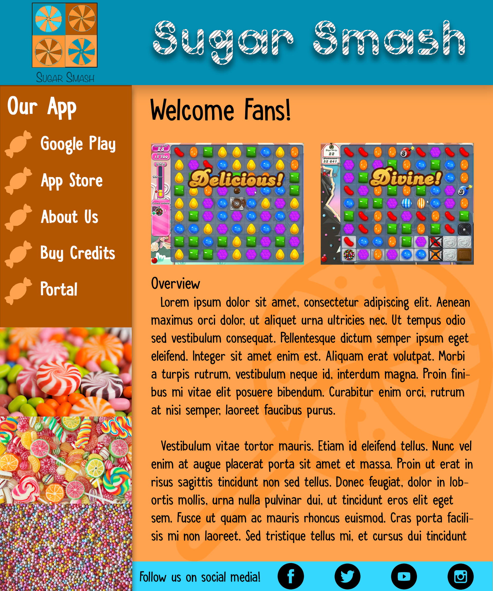

Triad Colour Scheme

Monochromatic Colour Scheme

Complimentary Colour Scheme

When comparing the three colour scheme choices I made, I can make the following points about the moods
given by each one:
-
Triad: This one has the most "fun" and vibrant look to it, and has the most contrast between
colours creating a more dynamic feel and edgy mood.
-
Monochromatic: By using a set of shades of the same colour, I think this one comes across as the most
calm feeling and creates a less dynamic but perhaps easier design on your eyes.
-
Complimentary: This one has a combination of traits from the previous two and is my personal favourite
because it has an exciting edgy appeal while at the same time reducing eye strain by not being overly vibrant.